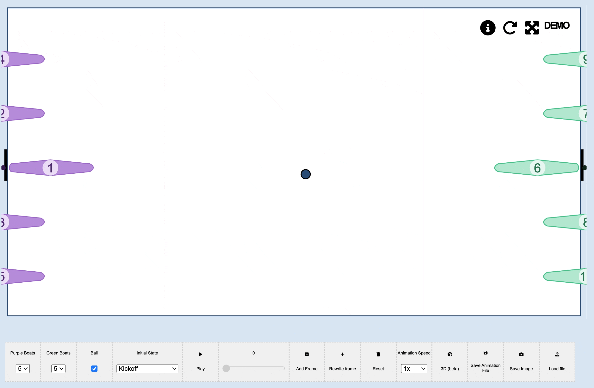
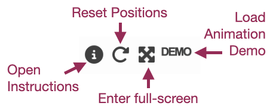
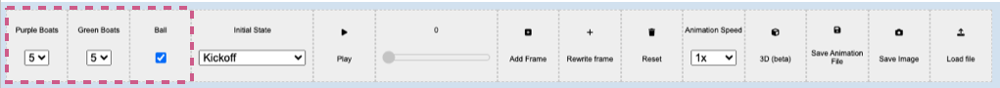

Canoe Polo Whiteboard Introduction
This is a tool to sketch, display and animate tactics and plays in canoe polo.
Interface
There are several buttons at the top:
There is a toolbar at the bottom with a number of options.
Here you can choose the number of each colour boats and turn the ball on and off - in case you want to simplify situations.
Animation

Animating your plays is simple:
- Save an initial position use "Add Frame"
- Move your boats and ball to a new position and click "Add Frame" again.
- Keep adding frames until your play is complete.
- Click "Play" and it will smoothly animate between the positions. To change the speed use the "Animation speed" dropdown
- If you want to edit your play, use the slider to navigate through the saved positions. Edit the positions and press "Rewrite frame"
- To start over click reset.
You can save the positions for the animation into a json file, using "Save
Animation File" and load an animation file using "Load File". You can save
an image with the save image button.
Unfortunately there is no built in method to create a recording, but I
recommend recording your screen or using
gifcap.dev to create an animated gif.
First person view

To visualise how a tactic would look during a game, there is a 3D first-person mode. This view allows a player to recognise and understand what the play would look and feel like when in the middle of it.
To create this, simply draw out an animation as before, then press "3D mode". There are limited controls here - choose the boat number for the viewpoint, change the speed of the animation and replay the animation using "reset".
If you click "return to whiteboard" it should keep the animation saved and open so you can make any adjustments to the play in 2D before returning to view it in 3D.
Acknowledgements
This project was created entirely by me, Gabriel Ing, however I must thank and credit Jack Watt. His feedback, advice and bug-spotting was invaluable, and the 3D mode was all his idea!
Thanks also to Forth Canoe Club who collectively taught me everything I know about the sport.
Any feedback or thoughts? Feel free to open an issue on Github or contact me on LinkedIn.